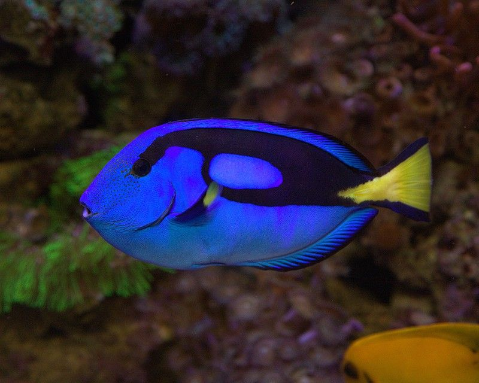
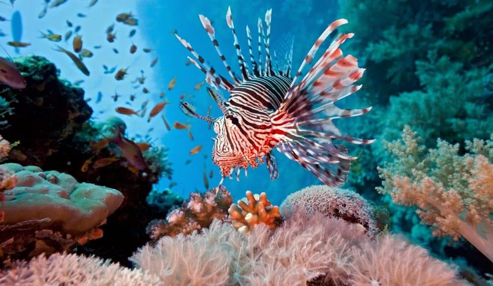
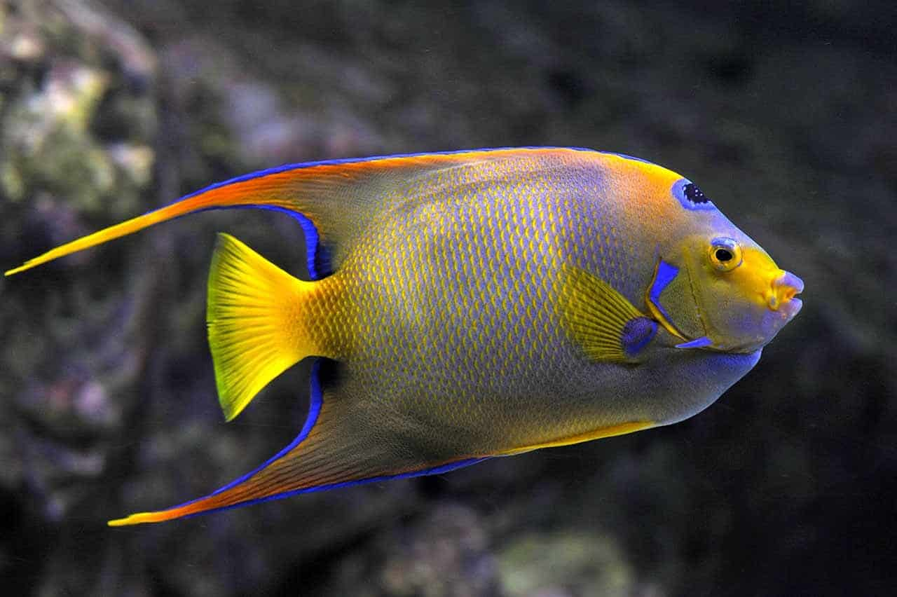

|
Peixe-Palhaço |
Um peixe de cor laranja e branco brilhante, conhecido por seu
relacionamento simbiótico com anêmonas-do-mar. Nativo das águas
quentes dos oceanos Índico e Pacífico.
|
|

|
Cirurgião-Patela |
Conhecido por sua cor azul vibrante e cauda amarela.
Popularizado pelo personagem Dory em "Procurando Nemo". Habita
recifes de corais na região do Indo-Pacífico.
|

|
Peixe-Betta |
Este peixe, frequentemente visto em lojas de animais, possui
cores marcantes que variam de azul, vermelho, verde e roxo.
Originalmente encontrado nas águas rasas da Tailândia, Camboja e
Vietnã.
|
|

|
Peixe-Leão |
Reconhecido por seus espinhos venenosos e belas listras
vermelhas, brancas e marrons. Nativo do Indo-Pacífico, tornou-se
invasivo no Oceano Atlântico.
|
|

|
Peixe-Anjo |
Conhecido por sua forma distinta e cores vibrantes. Vive em
recifes rasos e ambientes rochosos dos oceanos Atlântico, Índico
e Pacífico.
|